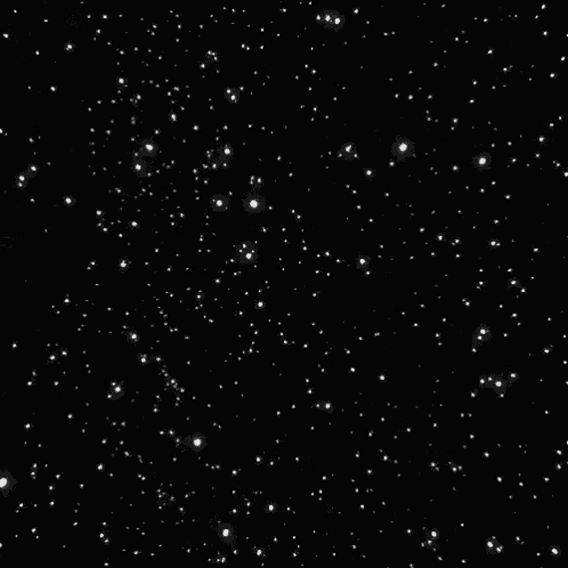

enter
The internet has come a long way and
like all things, a beginning comes with an ending too.
I do not know how to make it bounce. But i have a picture.
Now you are on your own. Follow hidden instructions and find your way.
I had a lot of fun. Here is my favorite website of all time. click me
" id="d1">Unfortunately, due to the overpopulation of
websites... the virtual world has collapsed
and only a few survivors sustained.
this storage has no limit, but only limit to time.
I hope u find your way. I was not able to add much
to this storage. I have many more around, surviving
the huge collapse, but each in their own voices.
good bye.